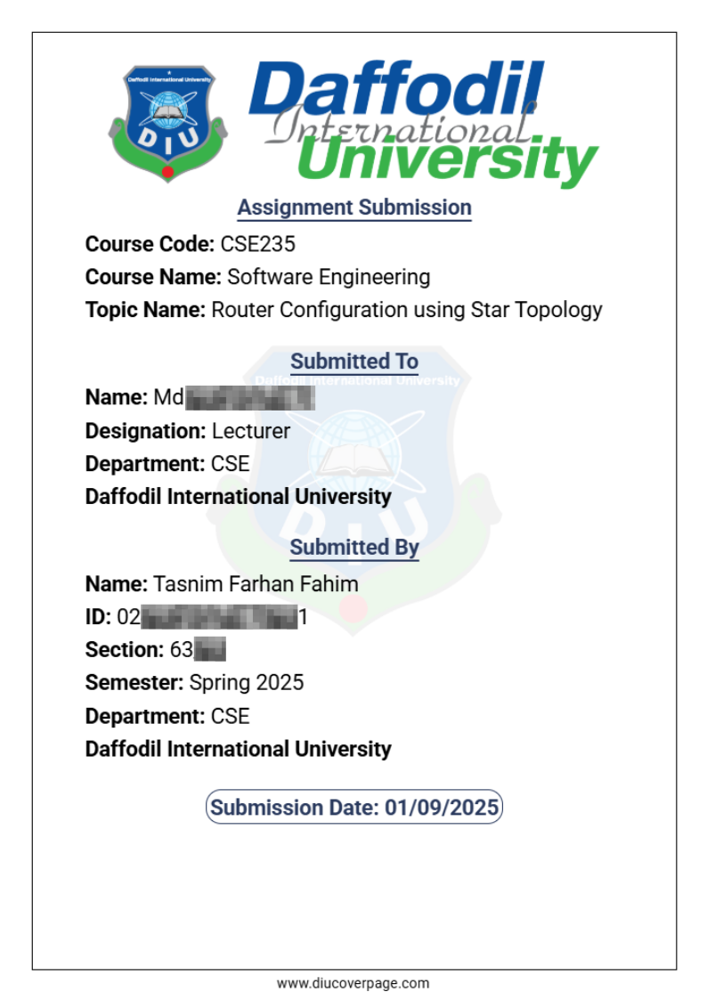

How to Create Your DIU Cover Page
Use this tool to quickly generate a clean, DIU‑formatted cover page for your assignments and lab reports. Follow the steps below:
-
Open the Cover Page Selection Hub
Locate navigation menu at the bottom of the page, Find Create option and Click on it to open the Page Type selection hub. -
Choose the Cover Page Type
From the options above, select the format you need: Assignment, Lab Report, Final Lab Report, or Lab Report Index. -
Fill in Your Information
Enter all required details (student name, ID, course title and code, teacher’s name etc.). Ensure all information is correct and spelled properly. -
Generate the Cover Page
After completing the form, click the Generate button. Your cover page will be created instantly based on the information you provided. -
Download or Print
Download your cover page as a PDF or Image file. You can then print it or attach it to your online submission (e.g., BLC). -
Review Your Last Submission
To quickly reuse or verify your previous entry, click the “View Last Submission Result” link bellow. -
Recommendations for Index Page Generation
Add up to 10 experiments. To prevent page overflow, please keep titles concise. If you need more entries or have very long titles, you may need to create the index manually. -
Need Help?
For any issues, suggestions, or error reports, use the contact links at the About section to reach out.
Tip: Always use the latest course and instructor information, and follow any additional formatting instructions provided by your teacher.
Demo: Generated Cover Page
Here is an example of what your fully generated and perfectly aligned DIU cover page will look like once you fill out the form and download it:
